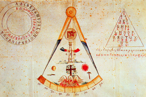
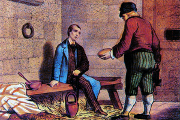

Lezione 16  L'Unità d'Italia
L'Unità d'Italia

-
370
330
-
370
360
-
275
370
-
420
145
-
319
310
-
319
275
-

NAPOLI
Come tutte le società segrete anche la Carboneria aveva messo a punto un complicato apparato di simboli e riti; qui vediamo alcune immagini di significato simbolico e perfino l'alfabeto segreto, un codice comprensibile solo a i membri.
-
NAPOLI
Nel Regno di Napoli sono i gruppi di carbonari ad organizzare la cospirazione. Il re Ferdinando I deve concedere una costituzione, ma la rivolta viene repressa e i diritti civili revocati.
I moti carbonari del 1820 a Napoli sono raffigurati in un'incisione popolare d'epoca che, attraverso la raffigurazione dell'abbigliamento, mette bene in luce l'appartenenza dei rivoltosi alle classi popolari.

BRNO
Lo scrittore romantico e carbonaro piemontese Silvio Pellico nella sua cella del carcere dello Spielberg, nell'odierna città di Brno. L'esperienza della prigionia viene raccontata nel celebre libro di memorie Le mie prigioni, che "nocque all'Austria più di una battaglia perduta", come ha riconosciuto lo stesso cancelliere austriaco Metternich.CADICE
I moti del 1820-21 hanno origine a Cadice, in Spagna, dove una parte dell'esercito si ribella e pretende una costituzione.REGNO LOMBARDO VENETO
La rivolta in Lombardia viene repressa sul nascere. I sospettati di cospirazione sono subito arrestati e condannati all'ergastolo. Tra di essi Silvio Pellico e Piero Maroncelli.PIEMONTE
In Piemonte i rivoltosi costituzionali, guidati da Santorre di Santarosa, puntano ad un'alleanza con Carlo Alberto, l'erede al trono piemontese. L'obbiettivo è unificare l'Italia in un regime costituzionale guidato dai Savoia, ma la rivolta fallisce perché al momento decisivo Carlo Alberto ritira il suo appoggio.